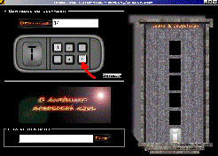
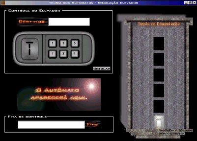
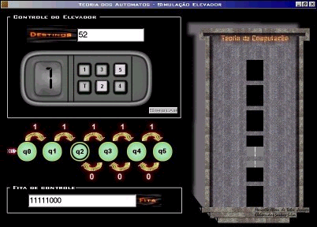

| Who am I? What do I do? |
| Welcome to my web page. My name is Marcello de Sales, and I live in Brazil. I study Computer Science at the Alagoas Federal University, since 1999, when I was transferred there from CESMAC. Here you will see everything my classmates and I implemented in 1999 to show my point of view about the projects professors assigned to us. It includes different subjects such as Theory of Computer and Data Structures, as they had provided me the best projects in my life. |
| The simulation of the behavior of an elevator based on the Finite State Automotion Theory |
|
In May 1999, my classmate and I created a simulation of the behavior of an elevator based on the Finite State Automotion theory. We thought of the floors of the elevator to be the states of the FSA. if the user asks to go up a floor, then the automotion would generate the string "1" or else it would generated the string "0" to go down a floor. But we stipulated that the order the elevator would stop on the floor would be the sequence that people would choose on "run time". That is, if firstly a person had chosen to go to the second floor, and another person had chosen to go to the first floor, the automotion would take the first person to the second floor, and the take the second to the first floor, generating the string "110" in the tape. The start state would be the first floor that the automotion received and the final state would be the last floor. As a non-memory device, the Finite State Automotion would read the tape. When the head reads the first string of the tape, the automotion takes the elevator to the first floor, and so on. When the head of automotion reads the last string, it would return the elevator to the first floor again. Here we have an animation that can simplify the exemple above. |
If you want to see some screenshots of the application, here they are:
|  | Here we have the beginning screen. He have the destinies of the elevator chosen by the user, the elevator and the string generated by the automotion. The user can choose any floor he/she wants to go but just once. if you'd like to take a look at the application, then download it! But if you want to view an applet version of the simulation, then you can click here! If you have a low connection, you can see my Java Script version. |
| Here we have a simulation example screen. q0 is the start state because it was the first floor the user had chosen, and the final state being q2. It was the last floor chosen. Note that the string generated by the automotion corresponds to the sequence the elevator moves. To go up to the fifth floor the automotion generated the string 11111 and to go down to the second floor 000. |  |
{kind=link}
{kind=link}